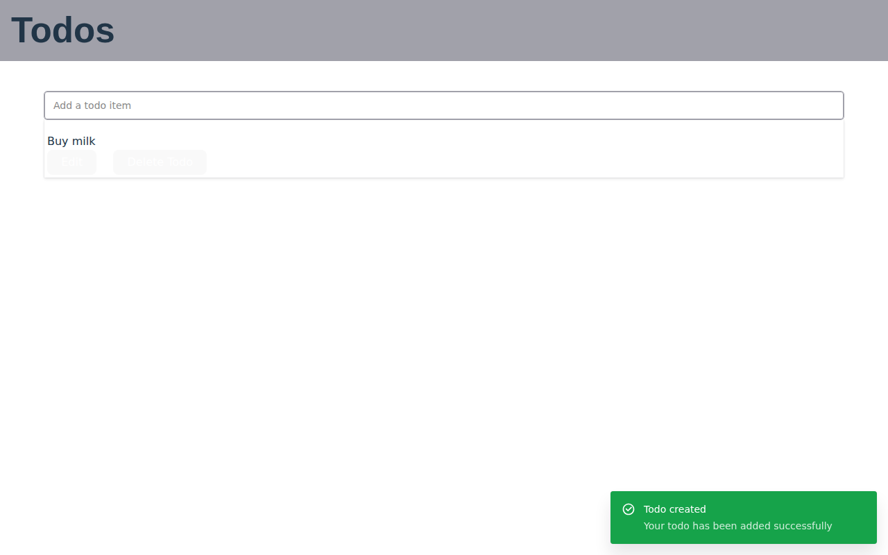
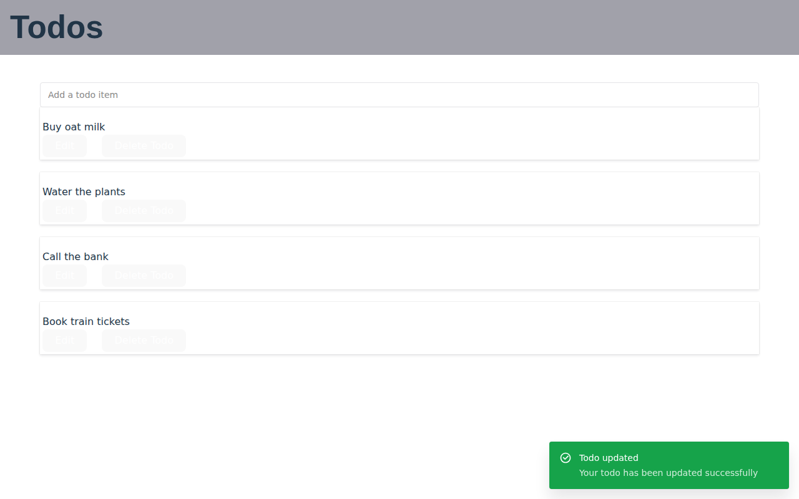
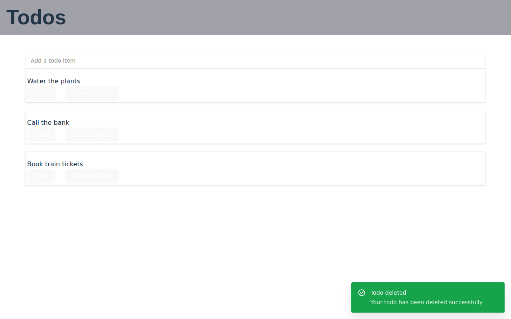
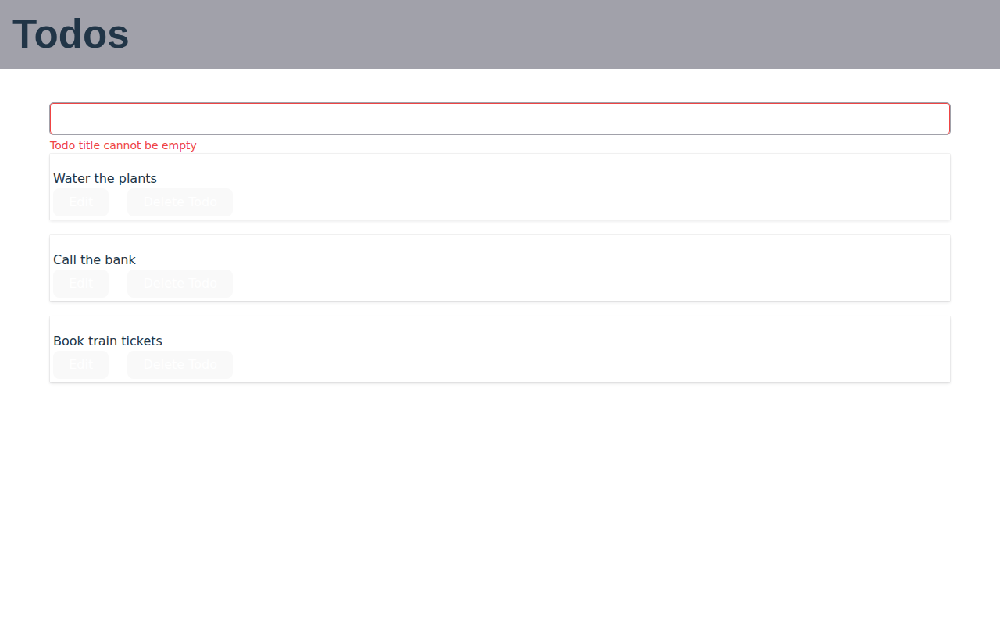

Phase 2 visual review: F0 → F2
Screens
Review: empty list 01-list-empty
pixel-identical; computed-style differences: 0


Capture: title typed 02-create-typed
pixel-identical; computed-style differences: 0


Capture: created, toast 03-create-done
pixel-identical; computed-style differences: 0


Review: four todos 04-list-several
pixel-identical; computed-style differences: 0


Rename: edit form open 05-edit-open
pixel-identical; computed-style differences: 0


Rename: saved, toast 06-edit-saved
pixel-identical; computed-style differences: 0


Delete: deleted, toast 07-delete-done
pixel-identical; computed-style differences: 0


Capture: validation error 08-validation-error
pixel-identical; computed-style differences: 0


Evidence: D-19 (Vite 8, Lightning CSS)
The built stylesheet changes from index-DPFTD5Gq.css (1.59 kB) to index-vagjFkSK.css (1.69 kB). The diff below is normalized with prettier 3.9.9 from the runner. Every change preserves the computed value in Chromium:
- Reordered declarations inside the same rules (
:root,[data-scope="dialog"],a,button,#root,.logo, theanimationshorthand). The values are the same, and no rule sets the same property twice. transparent→#0000: the same colour.color-scheme: light darklowering: Lightning CSS adds--lightningcss-light/--lightningcss-darkand a media query. These variables only matter tolight-dark(), which this CSS does not use.- Vendor prefixes:
-webkit-text-decorationis added, and the-moz-/-webkit-/-ms-placeholder rules become::placeholder. In Chromium,::-webkit-input-placeholderis an alias. optimizeLegibility→optimizelegibility: keywords are case-insensitive.
--- F0 dist/assets/index-DPFTD5Gq.css (prettier 3.9.9)
+++ F2 dist/assets/index-vagjFkSK.css (prettier 3.9.9)
@@ -1,23 +1,32 @@
:root {
- font-family: Inter, system-ui, Avenir, Helvetica, Arial, sans-serif;
- line-height: 1.5;
- font-weight: 400;
+ --lightningcss-light: initial;
+ --lightningcss-dark: ;
color-scheme: light dark;
color: #ffffffde;
- background-color: #242424;
font-synthesis: none;
- text-rendering: optimizeLegibility;
+ text-rendering: optimizelegibility;
-webkit-font-smoothing: antialiased;
-moz-osx-font-smoothing: grayscale;
+ background-color: #242424;
+ font-family: Inter, system-ui, Avenir, Helvetica, Arial, sans-serif;
+ font-weight: 400;
+ line-height: 1.5;
+}
+@media (prefers-color-scheme: dark) {
+ :root {
+ --lightningcss-light: ;
+ --lightningcss-dark: initial;
+ }
}
[data-scope="dialog"] {
- background: #1a1a1a !important;
--bg-currentcolor: #1a1a1a !important;
+ background: #1a1a1a !important;
}
a {
- font-weight: 500;
color: #646cff;
+ -webkit-text-decoration: inherit;
text-decoration: inherit;
+ font-weight: 500;
}
a:hover {
color: #535bf2;
@@ -27,16 +36,16 @@
line-height: 1.1;
}
button {
+ cursor: pointer;
+ color: #fff;
+ background-color: #1a1a1a;
+ border: 1px solid #0000;
border-radius: 8px;
- border: 1px solid transparent;
padding: 0.6em 1.2em;
+ font-family: inherit;
font-size: 1em;
font-weight: 500;
- font-family: inherit;
- background-color: #1a1a1a;
- cursor: pointer;
transition: border-color 0.25s;
- color: #fff;
}
button:hover {
border-color: #646cff;
@@ -49,15 +58,11 @@
color: #888;
opacity: 1;
}
-input::-moz-placeholder {
- color: #888;
- opacity: 1;
-}
-input::-webkit-input-placeholder {
+input::placeholder {
color: #888;
opacity: 1;
}
-input::-ms-input-placeholder {
+input::placeholder {
color: #888;
opacity: 1;
}
@@ -74,15 +79,15 @@
}
}
#root {
+ text-align: left;
max-width: 1280px;
margin: 0 auto;
padding: 2rem;
- text-align: left;
}
.logo {
+ will-change: filter;
height: 6em;
padding: 1.5em;
- will-change: filter;
transition: filter 0.3s;
}
.logo:hover {
@@ -101,7 +106,7 @@
}
@media (prefers-reduced-motion: no-preference) {
a:nth-of-type(2) .logo {
- animation: logo-spin infinite 20s linear;
+ animation: 20s linear infinite logo-spin;
}
}
.card {
Evidence: D-24 (Chakra 3.28 → 3.37, outline variant)
TodoEditForm.tsx:105 renders <Button variant="outline">Cancel</Button>. The button recipe changed in @chakra-ui/react/dist/esm/theme/recipes/button.js:
3.28.0 outline: { borderWidth: "1px", borderColor: "colorPalette.muted", color: "colorPalette.fg", … }
3.37.0 outline: { borderWidth: "1px", "--outline-color-legacy": "colors.colorPalette.muted",
"--outline-color": "colors.colorPalette.border",
borderColor: "var(--outline-color, var(--outline-color-legacy))", color: "colorPalette.fg", … }
Chakra 3 emits its styles in cascade layers. The app's global src/index.css has an unlayered button { border: 1px solid transparent; color: #fff; background-color: … } rule, and unlayered rules beat every layer. The CSSOM probe on the running F2 build lists every rule that matches the Cancel button (probe_layers.mjs → F2/d24-cascade-probe.json). The computed border colour is rgba(0, 0, 0, 0).
| Layer | Selector | Declarations |
|---|---|---|
| (unlayered) | button | border-color: rgba(0, 0, 0, 0); border: 1px solid rgba(0, 0, 0, 0); border-top-color: rgba(0, 0, 0, 0); color: rgb(255, 255, 255); background-color: rgb(26, 26, 26) |
| (unlayered) | button | background-color: rgb(249, 249, 249) |
| reset | *, ::before, ::after, ::backdrop | border-color: var(--global-color-border, currentColor) |
| reset | button, [type="button"], [type="reset"], [type="submit"] | background-color: transparent |
| reset | button, input, optgroup, select, textarea | color: inherit |
| recipes | .css-1r661dj | border-color: var(--outline-color, var(--outline-color-legacy)); color: var(--chakra-colors-color-palette-fg) |
The new recipe rule (layer recipes) is present in F2, but the unlayered legacy rule overrides it, so the token change is invisible here. The same mechanism produces the pre-existing quirk visible in every screen: Chakra buttons render white text on #f9f9f9.
Positive control
A one-line addition to the F2 stylesheet (body{letter-spacing:.5px}) was captured with the same setup and compared with F2. Every screen differed (and the stylesheet was then restored; its hash matches the build again):
01-list-empty: 3068 px (0.300%)02-create-typed: 3068 px (0.300%)03-create-done: 4073 px (0.398%)04-list-several: 4815 px (0.470%)05-edit-open: 4815 px (0.470%)06-edit-saved: 7668 px (0.749%)07-delete-done: 6829 px (0.667%)08-validation-error: 5826 px (0.569%)